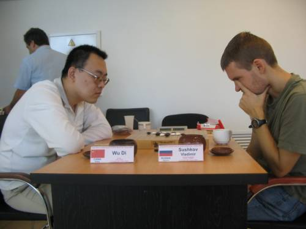

最受瞩目和最惊心动魄的一局
#1 最受瞩目和最惊心动魄的一局作者：酷妞 发表时间：2007-8-19 8:19:54
右边坐的是俄罗斯第1高手,3次世界亚军得主,世界排名第5的Sushkov Vladimir。Ando在近年的正式比赛中(05年世锦赛,06年世界团体赛)一次都没能战胜过他。
#2 Re:最受瞩目和最惊心动魄的一局作者：gigiqi 发表时间：2007-9-3 22:41:21
Q吧唯一的五子棋地址：http://qbar.qq.com/u2006628 支持QQ号直接登路！ 9月2号建立的 进去先看公告 . 欢迎大家去看看
只需首次登陆。此后登陆只需点击你QQ上的Q吧用户图标，就可直接进入到“五子棋Q吧”
#3 Re:最受瞩目和最惊心动魄的一局作者：双队长 发表时间：2007-9-13 10:57:13
最后谁赢啊 。。。。。#4 Re:最受瞩目和最惊心动魄的一局作者：潇洒 发表时间：2007-9-13 13:00:18
最后吴镝赢了#5 Re:最受瞩目和最惊心动魄的一局作者：逍遥一哼 发表时间：2009-10-26 9:39:39
妞啊，我没看见这局的谱啊#6 Re:最受瞩目和最惊心动魄的一局作者：岳麓小棋皇 发表时间：2009-10-26 13:17:03
我依稀记得是瑞星四方块的12手,被吴镝用做眠三的13给做死的.最后黑棋在左下角VCT的时候,黑石算不出,是葛凌峰老师第一给出的正解,当时被实战高手的强大深深的折服了.
可惜吴镝老师今年再遇见老对手的时候,没能续写辉煌...被干掉了.
#7 Re:最受瞩目和最惊心动魄的一局作者：uniwin 发表时间：2009-10-27 22:31:23
五子茶馆有吴镝自己写的评论，原帖地址是http://www.5zq.net/class/HTML/388.html，现转帖过来如下：
吴镝世锦赛自战记－(11)最后之战 #8 Re:最受瞩目和最惊心动魄的一局作者：方圆之外 发表时间：2009-10-31 15:57:10 这个12黑挺优。 感觉瑞星现在白都被动。 #9 Re:最受瞩目和最惊心动魄的一局作者：啊呆 发表时间：2009-11-11 15:05:33 #10 Re:最受瞩目和最惊心动魄的一局作者：啊呆 发表时间：2009-11-11 15:07:16 #11 Re:最受瞩目和最惊心动魄的一局作者：天京 发表时间：2009-11-29 1:48:30 12-c还是很多人走，起码我走得多=v=，不过黑先手非常漫长，很容易拖到和棋啊！ #12 Re:最受瞩目和最惊心动魄的一局作者：裁决殿雪月 发表时间：2009-11-29 6:07:41
11轮比赛打到最后一轮毫无疑问每个人都很疲劳了，相反的我却精力越来越充沛。这大概就是连战连胜带来的好处。7连胜是非常美妙的，之前的国内比赛我参加河北赛有过六连胜，虽然电子竞技CEG的总决赛我也是7连胜夺冠，但是那种快棋赛毫无疑问没有这种在棋盘上精心对局获得的7连胜美妙。尤其是在代表世界连珠最高水平的A组中，战胜一个又一个世界知名棋手，让我无论自信还是状态都达到了最颠峰。
面对最后一轮的对手俄罗斯Sushkov Vladimir八段，我的准备应该算是很精心的。因为他在近几年的国际比赛中战绩非常出色，两届世锦赛亚军对ANDO的不败，这些都让我对他小心翼翼。本来这次世锦赛前他是夺冠的最大热门，可惜在中间他几度失手，目前只排7分，而且由于小分过低，最后一轮哪怕他战胜我夺冠也是没有希望的。最后一轮说他为冠军而战到不如说是为尊严而战。
（图1）
实战我开了最稳健的瑞星。在俄罗斯这些天和我们接触最多的就是Sushkov，因此他对我的知识量是没有怀疑的，他也知道最后一轮我只要和棋就会冠军。因此在我开局瑞星后没有考虑过交换的问题。白12（见图1）的选择上A点由于会导入和棋他肯定不会走，B点在前一天我战胜Karlsson的对局中已经体现出我的研究深厚，所以也不会选择。C点白棋反击很少，黑棋利用优势控制全盘不成问题。他也不会选择。似乎这盘棋他的白12只能选择D点，因为之前他就是在这个白12中被山口执白击败。果然实战他选择了D点。
（参考图1）
面对12团角的下法我并不陌生，因为在以前国内的比赛中，如果我不想和棋也经常走这个白12，可以说我对白的一些下法非常的熟悉。但是这次在来比赛前，中国网络棋手中的几名代表人物都向我推荐过13直接活三的走法，认为那个走法黑棋优势巨大，甚至在理论上黑棋是必胜的。这里我不想走传统的13把局面导入对手熟悉的地方，传统13后白14有A、B、C（见参考图1）三点常见选择。三个点哪个黑棋都不会很容易进攻取胜的。
（图2）
实战我决定尝试下新的走法， 14唯一，反挡黑棋简单胜。15的走法（见图2）最早出现在比赛中是第三届全国赛重庆棋手邹入志（网名折枝客）对北京殷立成老师的对局。当时白棋面对未知的局面防守错误速败。这两年13-15的走法慢慢流传开了，速胜的情况肯定不会出现了。
（图3）
Sushkov似乎对我选择这个走法准备不足，面对15就开始长考，以下白棋应对无误。18后黑棋常见走法是下在18的右边。但是在来比赛之前某网络棋手向我推荐了19直接活三的走法。认为21后黑棋优势巨大。虽然之后的局面我没仔细拆过，但是对于自己计算能力的自信让我依然选择了这个21。果然Sushkov没想到我会选择挡在下面，21后再次长考。实战的22（见图3）是很强的一手。
（图4）
初看到22让我感觉很不舒服。计算了几个走法似乎先手都会属于白棋。在长考后发现了实战的23（见图4），在计算白棋各种交换方法后，发现无论白棋怎么交换黑在右下都会有一套隐蔽的VCT。其实这里我计算错误，实战的23并不是最强。而且黑棋右边貌似存在的VCT白棋也有强防。
黑23后，Sushkov如我所料的进行了交换，之后长考计算我右边是否存在VCT。但是长考后的结果让我大吃一惊。28！非常激烈的一手，看来他对胜利的渴望丝毫不在我之下。28让我难以想象，因为在计算23的过程中我就算过了，白棋在左边无法做出VCF。而黑棋在右下存在VCT，这里白棋不可能脱先的。难道我之前计算错误？带着这种疑问我又仔细的计算了右边黑棋的VCT，却没看到白棋的强防在哪里。很疑惑的我抬起头小声对Sushkov说NO VCF？之后开始在右边落子进攻。 
（图5）
黑29（见图5